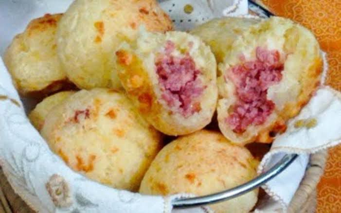
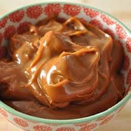

Pão de Queijo Recheado com Calabresa Artesanal
Experimente o sabor que une tradição rural e criatividade urbana.
Ingredientes
- 500g de polvilho azedo
- 150ml de óleo
- 1 colher de chá de sal
- 2 ovos
- 200g de queijo meia cura ralado
- 150g de calabresa artesanal picada
Modo de Preparo
- Ferva o leite com o óleo e o sal.
- Despeje sobre o polvilho e misture bem até esfriar um pouco.
- Adicione os ovos, o queijo ralado e misture até formar uma massa homogênea.
- Modele bolinhas, recheando com a calabresa.
- Asse a 200°C por cerca de 25 minutos.
Doce de Leite Caseiro
Um clássico da tradição rural, feito com ingredientes simples e muito sabor!
Ingredientes
- 2 litros de leite integral
- 500g de açúcar
- 1 colher de sopa de bicarbonato de sódio (opcional)
- 1 colher de chá de essência de baunilha (opcional)
Modo de Preparo
- Coloque o leite e o açúcar em uma panela grande.
- Cozinhe em fogo baixo, mexendo sempre.
- Adicione o bicarbonato e a baunilha, se desejar.
- Mantenha no fogo até engrossar e ficar cor de caramelo claro.
- Despeje em potes e deixe esfriar.